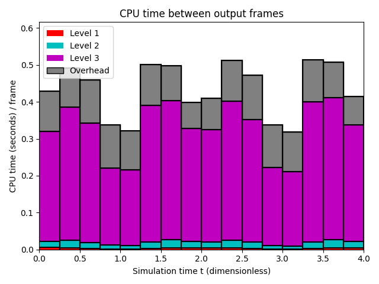

Datetime: 2021-09-21 14:48 From: /Users/rjl/clawpack_src/clawpack_master/amrclaw/examples/advection_2d_swirl/_output
============================== Timing Data ==============================
Integration Time (stepgrid + BC + overhead)
Level Wall Time (seconds) CPU Time (seconds) Total Cell Updates
1 0.230 0.236 0.197E+06
2 0.630 1.227 0.123E+07
3 9.332 26.254 0.259E+08
total 10.192 27.717 0.273E+08
All levels:
stepgrid 9.524 26.391
BC/ghost cells 0.534 1.186
Regridding 0.937 2.275
Output (valout) 7.533 7.219
Total time: 18.770 37.362
Using 3 thread(s)
Note: The CPU times are summed over all threads.
Total time includes more than the subroutines listed above
Note: timings are also recorded for each output step
in the file timing.csv.
clock_rate = 1000000000 per second, count_max = 9223372036854775807
clock_start = 1632260849742583000, clock_finish = 1632260868516662000
=========================================================================
